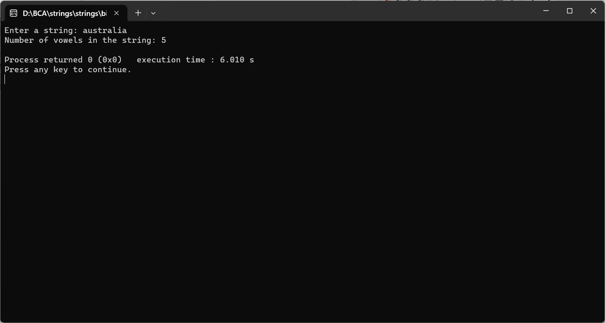

ENTER THE STRING FROM THE USER, AND COUNT THE NUMBER OF VOWELS
#include
#include
int main() {
char inputString[1000];
int vowelCount = 0;
printf("Enter a string: ");
fgets(inputString, sizeof(inputString), stdin);
for (int i = 0; inputString[i] != '\0'; i++) {
char ch = tolower(inputString[i]); // Convert character to lowercase for case-insensitive comparison
if (ch == 'a' || ch == 'e' || ch == 'i' || ch == 'o' || ch == 'u') {
vowelCount++;
}
}
printf("Number of vowels in the string: %d\n", vowelCount);
return 0;
}
